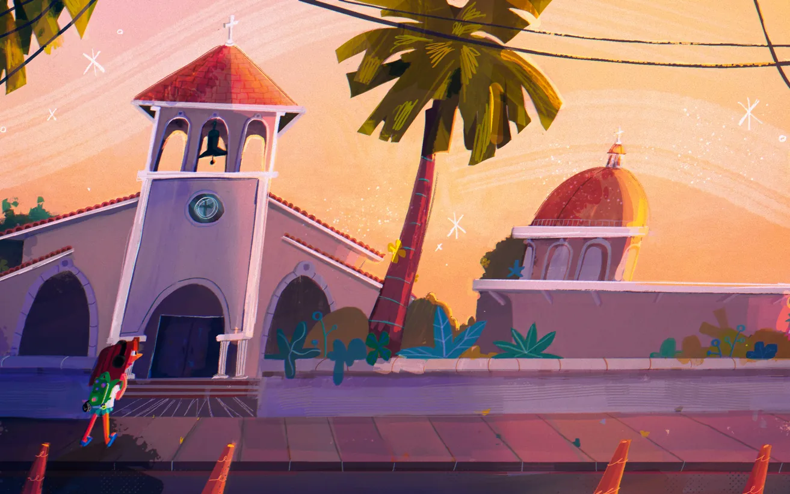
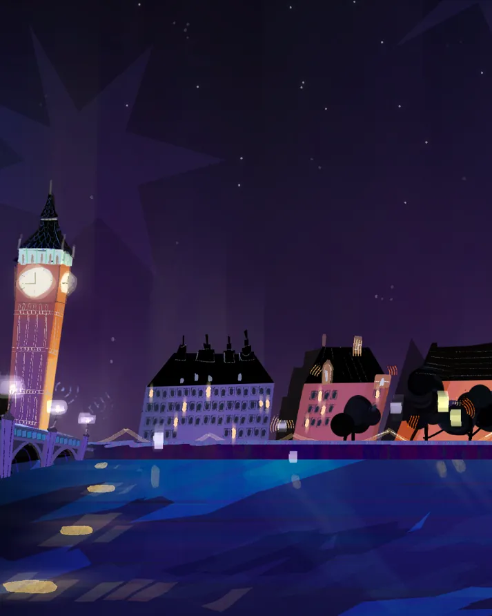

Daniela Chavarría
desarrollo visual e ilustración en Monterrey

Obra seleccionada
- 01
- 02
- 03
- 04
- 05
- 06
- 07
- 08
- 09
- 10
- 11
- 12
- 13
«Propuestas visuales inspiradas en mi cultura: brillante, colorida y rica.»

Sobre mí
Soy Daniela Chavarría, artista de desarrollo visual e ilustradora en México.
Me apasiona crear propuestas visuales nuevas, inspiradas en mi cultura brillante, colorida y rica, para proyectos que me reten.
Estudié Animación en la Universidad de Monterrey (UDEM) y terminé el segundo año de la maestría en Visual Development de IDEA Academy, en Roma.
Trayectoria
- Universidad de MonterreyAnimación (BFA)
- IDEA Academy, RomaMaestría en Visual Development
- Fotosíntesis MediaDirectora de arte
Lo que hago
Desarrollo visual
Mundos, paletas y ambientes para animación.
Fondos
Escenarios de día y de noche, pensados para la pantalla.
Ilustración
Personajes y piezas con todo el color de lo mexicano.